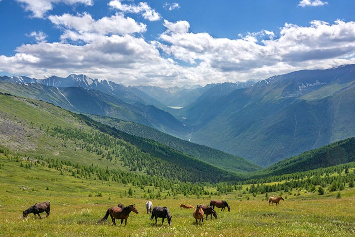
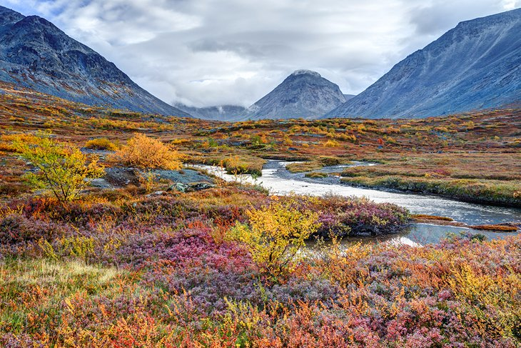
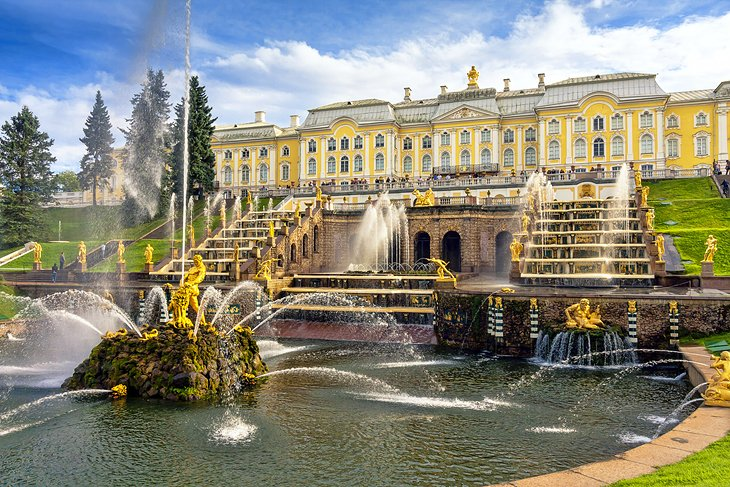
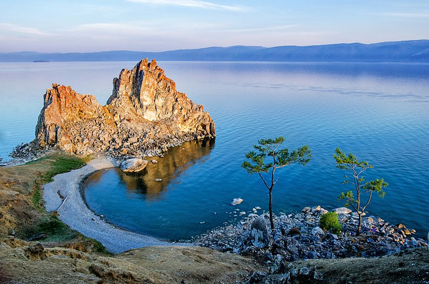
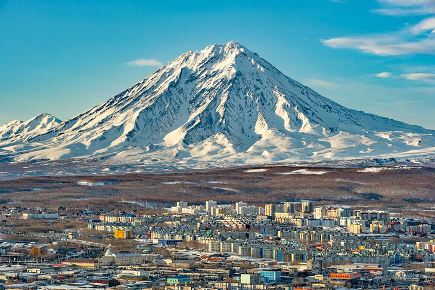
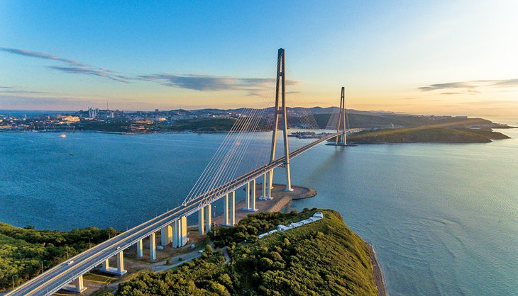

Best places to visit
4. Altai
The Altay Mountains in Siberia extend from Russia into China, Kazakhstan, and Mongolia. Traditionally inhabited by different ethnic groups involved in horse husbandry and forestry, it is also a very popular tourist destination for both locals and travelers. Together with a number of natural reserves and lakes, the Altay Mountains are part of a UNESCO World Heritage Site.
There's a lot of untouched beauty in Altay, where frozen rivers and snowcapped mountains attract cross-country skiers and other outdoor lovers in winter, as well as hikers (the area around Aktru Glacier is especially popular for trekking), kayakers, and climbers in summer. More unusual activities, including diving, cave exploring, and herb and mushroom picking, can also be pursued here.
The Denisova Cave in Siberia is particularly significant because of the bone fragments, artifacts, and even prehistoric horses that have been here–some dating back 50,000 years
The resort town of Belokurikha is a popular starting point for Altay adventures, and many tourism agencies offer organized trips from here.
5. Sochi

A summer beach resort town sitting right on the Black Sea, Sochi offers long stretches of pebble and sand beaches, imposing examples of Stalinist architecture, a summer film festival known as Kinotavr, and plenty of spas and outdoor markets to please all budgets and tastes. The longest river in Russia, Mzymta, cuts through Sochi before it empties into the Black Sea, and it's a very popular destination for rafting.
The 3000-square-kilometer Caucasian State Nature Biosphere Reserve, just 50 kilometers from Sochi, is a UNESCO World Heritage Site and home to a number of unique species of flora and fauna, including the endangered Persian leopard.
The nearby Rosa Khutor ski resort is another favorite destination during winter and a world-class alpine skiing area–the 2014 Winter Olympic Games were hosted here.
6. The Russian Tundra
The tundra is a unique biome that only exists in or near the Arctic Circle. Here, temperatures are so cold that trees can't grow, and only moss, shrubs, and certain types of grasses can get through the winter. In most places, the tundra is synonymous with permafrost–meaning the ground is permanently frozen. In areas where the top layer of ground does melt during summer, marshes and streams will form over the land, leading to beautiful patches of colorful icy water.
The Russian tundra is home to polar bears, seals, gray wolves, and rich birdlife during nesting season. Over the past few decades, ecotourism has become more and more interested in the tundra areas, especially the Great Arctic State Nature Reserve near Krasnoyarsk Krai, where visitors can take a number of environmental routes to explore, try bird-watching, or visit as part of an educational tour.
The city of Murmansk, in the Kola Peninsula, not only offers incredible tundra views, but it's also a great place to catch a tour to see the Northern Lights.
7. Peterhof
Peterhof might be home to a university and a major Russian watch manufacturer, but this relatively small city's call to fame is the Peterhof Palace. Originally designed and built in the early 1700s for Tsar Peter the Great in a style that resembles the Palace of Versailles, the palace grounds cover an area of almost 4000 hectares.
There are 173 garden fountains around the palace–some, like the Grand Cascade fountains, with special features that activate water jets when people get close. The lower gardens, designed in French formal style, offer marble statues, shaded walking paths, and even an aviary pavilion.
The Grand Palace itself is a masterpiece of architecture, with majestic colors (there are gold details everywhere), art imported from Asia and the Far East, walls covered in authentic Chinese silk, and a massive ballroom covered in gilded carvings. The palace contains 10 separate museums, which hold art, furniture, and palace items from the 18th century.
8. Olkhon Island
One of the world's largest lake islands, Olkhon is covered in steep mountains, lush forests, and taiga. The island is in Eastern Siberia and has a small permanent population that consists mostly of local Buryats, a Mongolic indigenous group who believes the island to be a powerful spiritual place.
Tourism has become a growing industry on Olkhon Island, with visitors coming over to explore places such as the coastal sand dunes and the abandoned Peschanaya Village and former Soviet labor camp nearby.
This area is also famous for its "walking trees," an unusual phenomenon that causes strong winds to uncover tree roots on the beach and gives them the appearance of a standing person.
There are several semi-urban settlements on the island, with Khuzir being the largest and the one offering homestays for visitors who want to stay over. The village also houses the small but interesting National History Museum of Revyakin, which chronicles life on the island as far back as Neolithic times.
9. Petropavlovsk-Kamchatsky
Located in the Russian Far East, the city of Petropavlovsk-Kamchatsky is surrounded by volcanoes (including the active, snowcapped Koryakskaya Sopka volcano) and cannot be reached by road–in fact, the only way to get into the city is to fly in.
Those who take on the challenge and get here, however, will discover an active city center with tons of monuments, squares, and churches. The city lies right against Avacha Bay, a great place for a waterside stroll and to catch a whale watching tour.
Tours to the volcanoes should be at the top of your list if you visit here, but skiing on Krasnaya Sopka mountain and a visit to the world's only Museum of Salmon are also must-dos.
The small but unique Vulcanarium Museum here offers a unique insight into the world of volcanoes and probably your only chance ever to touch lava.
10. Vladivostok
Located near the borders with China and North Korea and just across the ocean from Japan, Vladivostok is Russia's largest port city. A major stop on the Trans-Siberian Railway route, the city was actually off-limits to foreigners during Soviet Union times and now receives lots of foreign visitors eager to discover it.
The city is home to many parks and public spaces, including Sportivnaya Harbor with its beautiful beach and promenade, and the Eagle's Nest viewpoint at the top of a hill.
Vladivostok's Russky Bridge is a stunning architectural marvel and the longest cable-stayed bridge in the world at 1,885 meters. The bridge connects Vladivostok to Russky Island, where visitors will find Philippovsky Bay and its beautiful sandy beaches, as well as Voroshilov Battery, a military museum.
History buffs will appreciate a chance to explore the WWII C-56 Submarine or visit the Museum Vladivostok Fortress, originally built to protect the city against potential attacks from Japan.